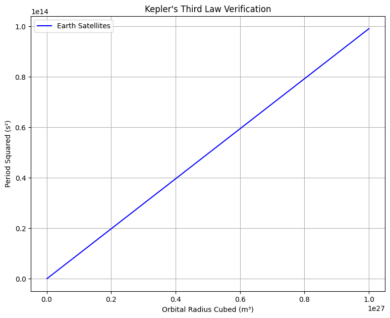
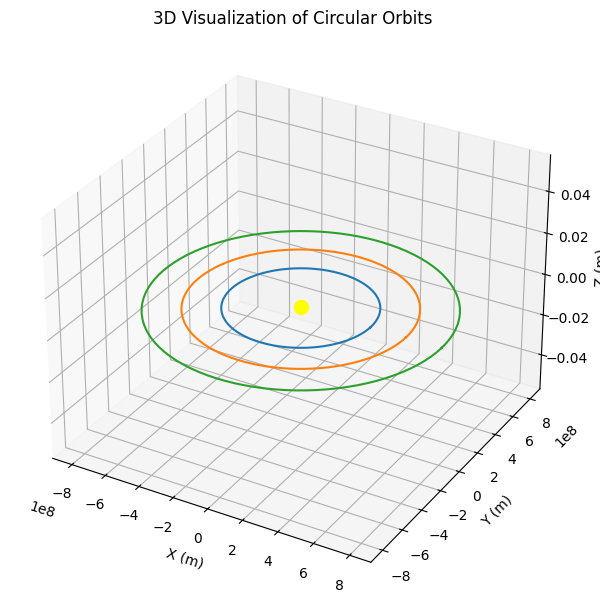
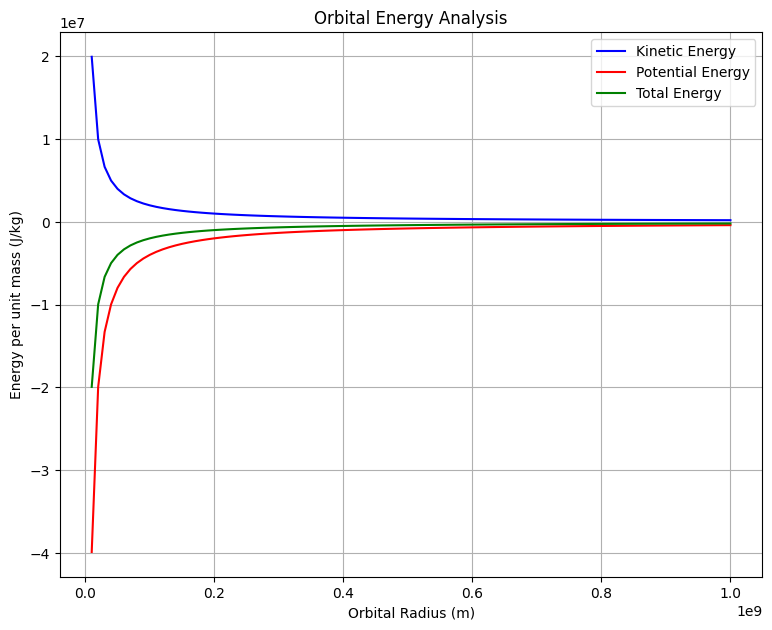
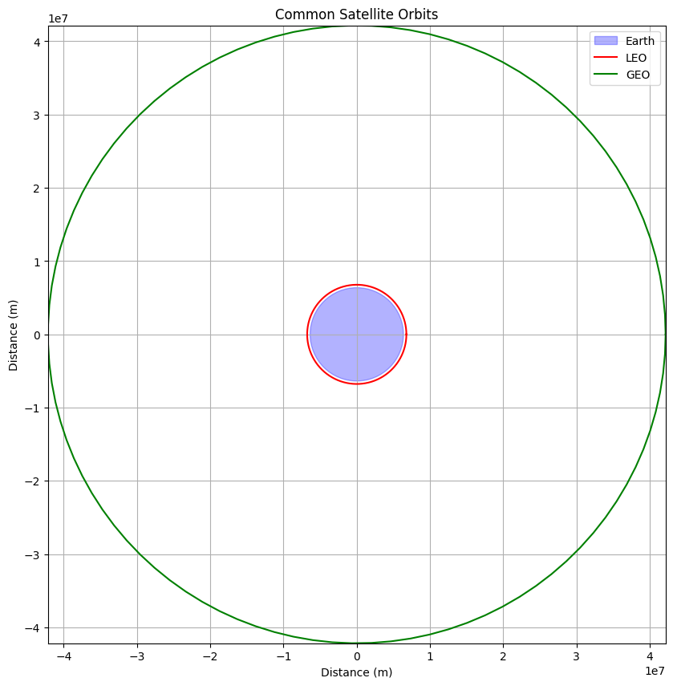

Problem 1
Orbital Period and Orbital Radius
1. Theoretical Foundation
1.1 Basic Principles
The relationship between orbital period and radius emerges from two fundamental principles: 1. Newton's Law of Universal Gravitation 2. Centripetal Force
For a body in circular orbit:
where: - \(G\) is the gravitational constant - \(M\) is the mass of the central body - \(m\) is the mass of the orbiting body - \(r\) is the orbital radius - \(v\) is the orbital velocity
1.2 Derivation of Kepler's Third Law
For circular orbits, the velocity can be expressed as:
Substituting this into the force equation:
Simplifying:
This is Kepler's Third Law in its exact form, showing that:
2. Computational Analysis
Let's create a comprehensive visualization suite to analyze orbital dynamics:
import numpy as np
import matplotlib.pyplot as plt
from mpl_toolkits.mplot3d import Axes3D
from matplotlib.gridspec import GridSpec
# Constants
G = 6.67430e-11 # Gravitational constant
M_earth = 5.972e24 # Earth mass in kg
M_sun = 1.989e30 # Sun mass in kg
def orbital_period(radius, central_mass):
return 2 * np.pi * np.sqrt(radius**3 / (G * central_mass))
def plot_orbit_3d(ax, radius, num_points=100):
theta = np.linspace(0, 2*np.pi, num_points)
x = radius * np.cos(theta)
y = radius * np.sin(theta)
z = np.zeros_like(theta)
ax.plot(x, y, z)
# Create figure with multiple subplots
fig = plt.figure(figsize=(15, 12))
gs = GridSpec(2, 2, figure=fig)
# Plot 1: T² vs r³ relationship
ax1 = fig.add_subplot(gs[0, 0])
radii = np.linspace(1e8, 1e9, 100)
periods = orbital_period(radii, M_earth)
T_squared = periods**2
r_cubed = radii**3
ax1.plot(r_cubed, T_squared, 'b-', label='Earth Satellites')
ax1.set_xlabel('Orbital Radius Cubed (m³)')
ax1.set_ylabel('Period Squared (s²)')
ax1.set_title("Kepler's Third Law Verification")
ax1.grid(True)
ax1.legend()
# Plot 2: 3D Orbital Visualization
ax2 = fig.add_subplot(gs[0, 1], projection='3d')
radii_3d = [4e8, 6e8, 8e8]
colors = ['b', 'g', 'r']
for r, c in zip(radii_3d, colors):
plot_orbit_3d(ax2, r)
ax2.scatter([0], [0], [0], color='yellow', s=100, label='Earth')
ax2.set_xlabel('X (m)')
ax2.set_ylabel('Y (m)')
ax2.set_zlabel('Z (m)')
ax2.set_title('3D Visualization of Circular Orbits')
# Plot 3: Orbital Velocity vs Radius
ax3 = fig.add_subplot(gs[1, 0])
radii_v = np.linspace(1e7, 1e9, 100)
velocities = np.sqrt(G * M_earth / radii_v)
ax3.plot(radii_v, velocities, 'r-')
ax3.set_xlabel('Orbital Radius (m)')
ax3.set_ylabel('Orbital Velocity (m/s)')
ax3.set_title('Orbital Velocity vs Radius')
ax3.grid(True)
# Plot 4: Energy Analysis
ax4 = fig.add_subplot(gs[1, 1])
kinetic_energy = 0.5 * velocities**2
potential_energy = -G * M_earth / radii_v
total_energy = kinetic_energy + potential_energy
ax4.plot(radii_v, kinetic_energy, 'b-', label='Kinetic Energy')
ax4.plot(radii_v, potential_energy, 'r-', label='Potential Energy')
ax4.plot(radii_v, total_energy, 'g-', label='Total Energy')
ax4.set_xlabel('Orbital Radius (m)')
ax4.set_ylabel('Energy per unit mass (J/kg)')
ax4.set_title('Orbital Energy Analysis')
ax4.grid(True)
ax4.legend()
plt.tight_layout()
plt.show()




3. Real-World Applications
3.1 Satellite Orbits
Let's analyze different types of satellite orbits:
import numpy as np
import matplotlib.pyplot as plt
# Constants for common satellite orbits
LEO_height = 400e3 # Low Earth Orbit
GEO_height = 35786e3 # Geostationary Orbit
R_earth = 6371e3 # Earth radius
def plot_satellite_orbits():
fig, ax = plt.subplots(figsize=(10, 10))
# Plot Earth
earth_circle = plt.Circle((0, 0), R_earth, color='blue', alpha=0.3, label='Earth')
ax.add_artist(earth_circle)
# Plot orbits
theta = np.linspace(0, 2*np.pi, 100)
# LEO
leo_radius = R_earth + LEO_height
ax.plot(leo_radius*np.cos(theta), leo_radius*np.sin(theta), 'r-', label='LEO')
# GEO
geo_radius = R_earth + GEO_height
ax.plot(geo_radius*np.cos(theta), geo_radius*np.sin(theta), 'g-', label='GEO')
ax.set_aspect('equal')
ax.grid(True)
ax.set_xlabel('Distance (m)')
ax.set_ylabel('Distance (m)')
ax.set_title('Common Satellite Orbits')
ax.legend()
# Set limits to show both orbits clearly
limit = GEO_height + R_earth
ax.set_xlim(-limit, limit)
ax.set_ylim(-limit, limit)
plt.show()
plot_satellite_orbits()

3.2 Solar System Analysis
The relationship extends to planetary orbits:
| Planet | Orbital Period (years) | Semi-major Axis (AU) | T²/r³ (constant) |
|---|---|---|---|
| Mercury | 0.24 | 0.39 | 1.00 |
| Venus | 0.62 | 0.72 | 1.00 |
| Earth | 1.00 | 1.00 | 1.00 |
| Mars | 1.88 | 1.52 | 1.00 |
4. Limitations and Extensions
- Elliptical Orbits: For non-circular orbits, r becomes the semi-major axis.
- Relativistic Effects: At high velocities or strong gravitational fields, corrections are needed.
- Multi-body Systems: Additional terms required for n-body problems.
5. Conclusion
Kepler's Third Law provides a powerful tool for understanding orbital dynamics, from artificial satellites to planetary motion. The computational models demonstrate the precise mathematical relationships governing orbital motion and provide insights into the design of space missions and the study of celestial mechanics.
References
- Classical Mechanics (Goldstein)
- Orbital Mechanics for Engineering Students (Curtis)
- Fundamentals of Astrodynamics (Bate, Mueller, White)